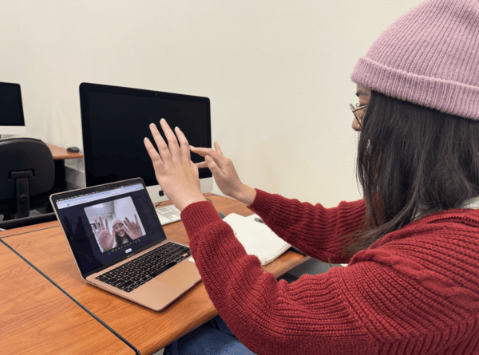
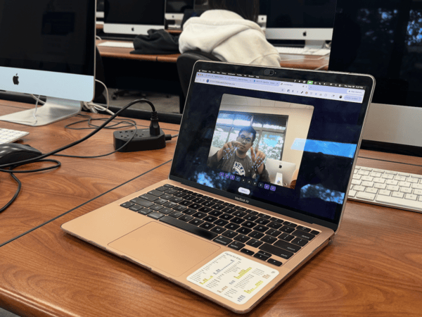

Invisible Keys · 3 Testers


Observation 01
Two testers felt that the "How to Play" instructions should come before the camera access prompt. One tester started curling her fingers during the camera permission screen because she assumed that the experience had already begun.
Revision: Move the air piano instructions screen before the camera access screen within the user flow.
Observation 02
Two testers expected to see a piano keyboard graphic on screen, and one mentioned that the C through B note labels didn't mean much for users without a musical background. The overall experience resonated with users once they started playing around with the air piano feature, but their initial expectations for the visuals were different.
Revision: Add stronger visual feedback when notes are played (adding sheet music could help with learning to play notes) and consider adding a piano graphic overlay.
Observation 03
All three testers found the survey questions to be thought-provoking and were able to find an answer that resonated with them for each survey question. However, one tester wanted the option to elaborate on their thoughts with an open-ended response after given the multiple choice questions.
Revision: Explore adding one open-ended question within the survey and display live responses from other users to provide more perspective.